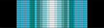

Antarctica Service Medal
Service award
For service on the Antarctic continent or in support of U.S. operations there.
Check your eligibility and build your ribbon rackHow you get it
You earn this by meeting the requirements. No recommendation is needed. If it's missing from your record, current members can have their MPF add it. Veterans can request it from AFPC with a Standard Form 180 and supporting documents.
You qualify if any of these apply
- Served 30 days of assigned duty at sea or ashore south of latitude 60 degrees south (after July 1, 1973)
- Served 15 days (not necessarily consecutive) of assigned duty at an outlying station on the Antarctic continent
- Flew 15 logistics-support missions into or out of the Antarctic area as aircrew (after July 1, 1987)
- Served on the Antarctic continent or in support of U.S. operations there after Jan. 1, 1946 (before July 1, 1973 criteria)
Quick facts
- Category
- Campaign and service
- Type
- Service award
- WAPS points
- 0
- Position in the AFPC listing
- 44 of 91 (listed in order of precedence)
Full AFPC fact sheet text
Background
Established by an Act of Congress on July 7, 1960, the ribbon was authorized in 1961, and the design of the medal received final approval in 1963. The first recipients of this award were members of the U.S. Navy operation High Jump under the late Admiral R.E. Byrd in 1946 and 1947. Deserving civilians, including scientists and polar experts, can also be awarded this medal.
Criteria
It is awarded to any member of the armed forces of the United States, U.S. citizen, or resident alien of the United States, who after Jan. 1, 1946 to a date to be announced, served on the Antarctic continent or in support of U.S. operations there.
After July 1, 1973, the ribbon is awarded for 30 days of assigned duty at sea or ashore, south of latitude 60 degrees south. It is also awarded for 15 days assigned duty at an outlying station on the continent; days do not need to be consecutive. Starting July 1, 1987, flight crews providing logistics support from outside the Antarctic area will be awarded the medal after 15 missions; one flight in or out during a 24-hour period equals one mission.
Medal description
The medal, designed by the United States Mint, is a green-gold disc. On the obverse is a heroic figure of a man in Antarctic clothing, with hood thrown back, arms extended, hands closed, and legs spread to symbolize stability, determination, courage and devotion. The figure stands on broken ground, with clouds in the background and mountains in the far distance. The reverse shows a polar projection map of the Antarctic Continent, with the words “Courage, Sacrifice, Devotion” set across in three centered lines, all within a symbolic circular border of penguins and marine life.
Ribbon description
The ribbon has a white center stripe flanked by progressively darker shades of blue, with black at the edges.
Authorized devices
Wintered Over clasp (for medal) or disc (for ribbon) in bronze (first), gold (second) or silver (third or more). This is only awarded to members who stay on the Antarctic continent during the winter months.
Source: Antarctica Service Medal fact sheet, Air Force's Personnel Center